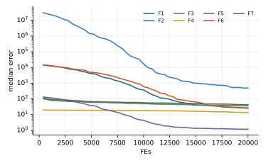

Chương 13 · Mục 13.1Chapter 13 · Section 13.1
Tối ưu kiếm ăn của vi khuẩnBacterial Foraging OptimizationBacterial Foraging Optimization — BFOBFO — swim, tumble, reproduce, disperse
Châu Văn Vân · PTITHCM
Mục tiêu bài họcLearning objectives
Sau chương này, bạn có thểAfter this chapter you will be able to
- Mô tả vòng đời kiếm ăn của E. coli: hóa hướng động, sinh sản, loại bỏ – phát tán.Describe E. coli foraging: chemotaxis, reproduction, elimination–dispersal.
- Viết bước nhào lộn và bơi với độ dài bước C.Write the tumble and swim steps with run length C.
- Giải thích ba vòng lặp lồng nhau Ned ⊃ Nre ⊃ Nc.Explain the three nested loops Ned ⊃ Nre ⊃ Nc.
- Đọc kết quả: vì sao BFO gốc kém trên bộ hàm chuẩn.Read the results: why the original BFO performs poorly on the benchmark suite.
Tổng quanOverview
E. coli tìm thức ăn bằng hóa hướng độngE. coli forages by chemotaxis
- Do Kevin Passino đề xuất năm 2002 (IEEE Control Systems Magazine 22(3)).Proposed by Kevin Passino in 2002 (IEEE Control Systems Magazine 22(3)).
- Vi khuẩn E. coli quay roi theo hai kiểu: bơi thẳng khi môi trường đang tốt lên, nhào lộn đổi hướng ngẫu nhiên khi không.E. coli rotates its flagella in two modes: swim straight while conditions improve, tumble to a random new direction otherwise.
- Vi khuẩn khỏe sinh sản bằng phân đôi; vi khuẩn yếu chết.Healthy bacteria reproduce by splitting; weak ones die.
- Biến cố môi trường có thể giết hoặc mang vi khuẩn đi xa: loại bỏ và phát tán.Environmental events can kill or carry bacteria away: elimination and dispersal.
Ý tưởng cốt lõiCore idea
Vi khuẩn bơi tiếp khi môi trường tốt lên và nhào lộn khi không. Định kỳ, nửa khỏe phân đôi và một số con bị phát tán tới nơi xa.Bacteria keep swimming while things improve and tumble when not. Periodically the healthy half splits and some are dispersed far away.
Các thành phầnComponents
Ba vòng lặp lồng nhauThree nested loops
- Vi khuẩnBacteriumVi khuẩnBacterium
- Lời giải θi(j, k, l) ở bước hóa hướng động j, sinh sản k, phát tán lSolution θi(j, k, l) at chemotaxis step j, reproduction k, dispersal l
- Sức khỏeHealthSức khỏeHealth
- Jhealth = Σj J trong một vòng sinh sảnJhealth = Σj J over one reproduction cycle
- Tín hiệu bầySwarmingTín hiệu bầySwarming
- Jcc: hút ở xa, đẩy ở gầnJcc: attract far, repel near
Bước nhào lộnTumble step
θ ← θ + C Δ / √(ΔTΔ)Chi phíCost
S · Nc · Nre · Ned · (1 + Ns)Các bướcSteps
Các bước của BFOBFO step by step
Ba vòng lặp lồng nhau thay cho một vòng lặp đơn.Three nested loops instead of a single loop.
- Khởi tạo S vi khuẩn ngẫu nhiên.Initialize S bacteria at random.
- Hóa hướng động: mỗi vi khuẩn nhào lộn rồi bơi tối đa Ns bước khi còn cải thiện.Chemotaxis: each bacterium tumbles, then swims up to Ns steps while improving.
- Lặp Nc bước hóa hướng động, cộng dồn sức khỏe.Repeat Nc chemotactic steps, accumulating health.
- Sinh sản: nửa khỏe nhất phân đôi, nửa còn lại chết.Reproduction: the healthiest half splits, the rest die.
- Sau Nre lần sinh sản: mỗi vi khuẩn bị phát tán với xác suất Ped.After Nre reproductions: each bacterium is dispersed with probability Ped.
2 – 5 vòng lặp chínhmain loop
Thuật toánAlgorithm
Lưu đồFlowchart
Mô hình toán họcMathematical model
Nhào lộn, rồi bơi theo cùng hướngTumble, then swim in the same direction
- Δ(i): vector ngẫu nhiên trong [−1, 1]D; chia cho độ dài để được hướng đơn vị.Δ(i): a random vector in [−1, 1]D, normalized to a unit direction.
- Nếu bước vừa đi làm J + Jcc giảm, vi khuẩn bơi tiếp cùng hướng, tối đa Ns bước.If the step lowers J + Jcc, the bacterium keeps swimming the same way, up to Ns steps.
- Jcc với da = 0.1, wa = 0.2, hr = 0.1, wr = 10 (Passino, 2002).Jcc with da = 0.1, wa = 0.2, hr = 0.1, wr = 10 (Passino, 2002).
Mô hình toán họcMathematical model
Chọn lọc theo sức khỏe, rồi phát tán ngẫu nhiênSelection by health, then random dispersal
- Sắp xếp theo Jhealth tăng dần (cực tiểu); Sr = S/2 con khỏe nhất phân đôi tại chỗ.Sort by ascending Jhealth (minimization); the Sr = S/2 healthiest split in place.
- Phát tán giữ đa dạng và giúp thoát cực trị, nhưng cũng có thể vứt bỏ lời giải tốt.Dispersal maintains diversity and escapes local optima, but may also discard good solutions.
Tham sốParameters
Tham số của BFO (Passino, 2002)BFO parameters (Passino, 2002)
| Tham sốParameter | Ý nghĩaMeaning | Giá trị thường dùngTypical value |
|---|---|---|
| S | Số vi khuẩnNumber of bacteria | 50 (bài gốc) / 30 (giáo trình) |
| Nc, Ns | Bước hóa hướng động; bước bơi tối đaChemotactic steps; max swim length | 100; 4 |
| Nre, Ned | Số lần sinh sản; số lần phát tánReproductions; dispersals | 4; 2 |
| Ped | Xác suất phát tánDispersal probability | 0.25 |
| C | Độ dài bướcRun length | 0.1 (miền ~10) → 0.01(ub − lb) |
Trong giáo trình, Nc được chọn để vừa ngân sách 20 000 lần đánh giá.In the textbook Nc is chosen to fit the 20,000-evaluation budget.
Mô phỏngSimulation
12 vi khuẩn trên địa hình chung12 bacteria on the shared landscape
Mỗi bước mô phỏng là một bước hóa hướng động. Cứ 10 bước có một lần sinh sản (viền xanh lá), cứ 40 bước có phát tán (viền cam).Each step is one chemotactic step. Every 10 steps comes a reproduction (green outline), every 40 a dispersal (orange outline).
Độ dài bước C = 0.01 (ub − lb) như cài đặt thực nghiệm.Run length C = 0.01 (ub − lb) as in the experiments.
Ví dụ tính tay · hàm J = θ1² + θ2²Worked example · J = θ1² + θ2²
Một bước hóa hướng động với bơi tiếpOne chemotactic step with swimming
- Nhào lộn: θ = (1.06, 0.92), J = 1.97 < 2 nên bơi tiếp.Tumble: θ = (1.06, 0.92), J = 1.97 < 2, so swim on.
- Bơi 1: θ = (1.12, 0.84), J = 1.96 < 1.97 nên bơi tiếp.Swim 1: θ = (1.12, 0.84), J = 1.96 < 1.97, swim on.
Kết quảResult
- Bơi 2: θ = (1.18, 0.76), J = 1.97 không tốt hơn nên dừng bơi.Swim 2: θ = (1.18, 0.76), J = 1.97 is not better, so swimming stops.
- Theo Passino, vi khuẩn ở lại vị trí cuối (1.18, 0.76); sức khỏe cộng thêm J = 1.97.Per Passino, the bacterium stays at the last position (1.18, 0.76); health adds J = 1.97.
- Bước C = 0.1 cố định nên tiến rất chậm: lý do chính khiến BFO kém trên miền rộng.The fixed step C = 0.1 makes progress slow: the main reason BFO struggles on wide domains.
Các biến thểVariants
Hướng cải tiếnDirections of improvement
Độ dài bước thích nghiAdaptive run length
Cho C giảm theo thời gian hoặc theo sức khỏe.Let C shrink over time or with health.
BFO lai PSOBFO–PSO hybrid
Dùng hướng của PSO thay cho hướng ngẫu nhiên khi nhào lộn.Use PSO's direction instead of a random one when tumbling.
Bỏ JccDropping Jcc
Nhiều bản cài đặt bỏ tín hiệu bầy để giảm chi phí O(S²).Many implementations drop swarming to cut the O(S²) cost.
BFO đa mục tiêuMulti-objective BFO
Sức khỏe theo thứ hạng Pareto.Health by Pareto rank.
Ứng dụngApplications
Ứng dụng của BFOBFO applications
BFO ra đời từ lý thuyết điều khiển nên được dùng nhiều trong điều khiển và hệ thống điện.BFO grew out of control theory, so it is common in control and power systems.
Điều khiểnControl
Chỉnh tham số bộ điều khiển PID.PID controller tuning.
Hệ thống điệnPower systems
Điều độ kinh tế, giảm tổn thất.Economic dispatch, loss reduction.
Lọc tín hiệuSignal processing
Thiết kế bộ lọc thích nghi.Adaptive filter design.
Phân cụmClustering
Tìm tâm cụm dữ liệu.Finding cluster centres.
Thực nghiệm · BFOExperiment · BFO
Kết quả trên bộ 7 hàm, D = 10, 30 lần chạyResults on the 7-function suite, D = 10, 30 runs
| HàmFunction | Trung bìnhMean | Độ lệchStd | Trung vịMedian | so PSOvs PSO |
|---|---|---|---|---|
| F1 · Sphere | 2.43e+1 | 7.06e+0 | 2.66e+1 | − |
| F2 · Rosenbrock | 6.17e+2 | 5.02e+2 | 4.96e+2 | − |
| F3 · Rastrigin | 3.68e+1 | 6.30e+0 | 3.66e+1 | − |
| F4 · Ackley | 1.30e+1 | 3.13e+0 | 1.35e+1 | − |
| F5 · Griewank | 1.19e+0 | 8.22e−2 | 1.18e+0 | − |
| F6 · Shifted Sphere | 2.70e+1 | 9.41e+0 | 2.49e+1 | − |
| F7 · Shifted Rastrigin | 4.38e+1 | 6.48e+0 | 4.31e+1 | − |
- Sai số f(xbest) − f* sau 20 000 lần đánh giá; n = 30; tham số mặc định của bài gốc; giá trị < 10−8 ghi là 0.Error f(xbest) − f* after 20,000 evaluations; n = 30; default parameters of the original paper; values < 10−8 shown as 0.
- Cột cuối: Wilcoxon rank-sum với PSO (α = 0.05): + tốt hơn, − kém hơn, ≈ không khác biệt.Last column: Wilcoxon rank-sum vs PSO (α = 0.05): + better, − worse, ≈ no difference.
- Xếp hạng Friedman trung bình: 16.14, đứng thứ 18/18 trong 18 thuật toán của giáo trình.Average Friedman rank: 16.14, position 18/18 among the textbook’s 18 algorithms.
- BFO đứng cuối (18/18): bước cố định C và ngân sách bị chia cho ba vòng lặp lồng nhau làm tiến độ rất chậm trong 20 000 lần đánh giá.BFO ranks last (18/18): the fixed step C and a budget split across three nested loops make progress very slow within 20,000 evaluations.
Thực nghiệm · BFOExperiment · BFO
Đường hội tụ (trung vị 30 lần chạy)Convergence (median of 30 runs)

Mã nguồnSource code
Mã nguồn PythonPython source code
Đoạn trích phần cập nhật chính; tệp đầy đủ có chú thích và tham số mặc định theo bài gốc.Excerpt of the main update; the full file documents the default parameters of the original paper. code/si/algorithms/bfo.py
for i in range(n): if prob.done: return prob.best_x, prob.best_f Jlast = J[i] + _jcc(X, i) delta = rng.uniform(-1, 1, prob.dim) step = C * delta / np.linalg.norm(delta) X[i] = prob.clip(X[i] + step); J[i] = prob(X[i])[0] Ji = J[i] + _jcc(X, i) m = 0 while m < Ns and Ji < Jlast and not prob.done: # bơi tiếp khi còn tốt lên Jlast = Ji X[i] = prob.clip(X[i] + step); J[i] = prob(X[i])[0] Ji = J[i] + _jcc(X, i) m += 1 health[i] += J[i] o = np.argsort(health) # sinh sản half = n // 2 X = np.vstack([X[o[:half]], X[o[:half]]])[:n] J = np.concatenate([J[o[:half]], J[o[:half]]])[:n] disperse = rng.random(n) < Ped # loại bỏ – phát tán
Chạy lại toàn bộ thực nghiệm: python -m experiments.run_continuous trong thư mục code/ (xem PROTOCOL.md).Reproduce all experiments: python -m experiments.run_continuous inside code/ (see PROTOCOL.md).
Đánh giáAssessment
Gần sinh học, nhưng chậmBiologically faithful, but slow
Điểm mạnhStrengths
- Mô hình sát với hành vi thật của vi khuẩn; dễ giảng dạy.A model close to real bacterial behaviour; easy to teach.
- Phát tán giữ đa dạng quần thể.Dispersal maintains population diversity.
- Là nền cho nhiều biến thể lai mạnh hơn.A base for many stronger hybrids.
Hạn chế và biến thểLimitations and variants
- Nhiều tham số (S, Nc, Ns, Nre, Ned, Ped, C và 4 hệ số bầy).Many parameters (S, Nc, Ns, Nre, Ned, Ped, C and 4 swarming coefficients).
- Bước cố định không tự thu nhỏ: khó đạt độ chính xác cao.The fixed step never shrinks: high precision is hard to reach.
- Kém nhất trong thực nghiệm của giáo trình.Worst in the textbook's experiments.
Bài tập và thực hànhExercises and labs
Luyện tập: tính tay rồi lập trìnhPractice: by hand, then in code
Bài tập lý thuyếtTheory exercises
- Tính tổng số lần đánh giá tối đa với S = 50, Nc = 100, Ns = 4, Nre = 4, Ned = 2.Compute the maximum evaluations with S = 50, Nc = 100, Ns = 4, Nre = 4, Ned = 2.
- Lặp lại ví dụ tính tay với Δ = (−0.8, −0.6).Redo the worked example with Δ = (−0.8, −0.6).
- Vì sao chọn nửa khỏe theo Jhealth thay vì giá trị cuối?Why select by Jhealth rather than the final value?
Thực hành Python / MATLABPython / MATLAB labs
- Cài độ dài bước giảm tuyến tính và so sánh trên F1, F3.Implement a linearly decreasing run length and compare on F1, F3.
- Bỏ Jcc và đo thay đổi về thời gian và chất lượng.Drop Jcc and measure the change in time and quality.
- Dùng BFO chỉnh bộ PID cho hệ bậc hai.Use BFO to tune a PID for a second-order plant.
Tài liệu tham khảoReferences
Đọc thêm: các bài báo gốcFurther reading: the original papers
- K. M. Passino, “Biomimicry of bacterial foraging for distributed optimization and control,” IEEE Control Syst., vol. 22, no. 3, pp. 52–67, 2002, doi: 10.1109/MCS.2002.1004010.
- X.-S. Yang and S. Deb, “Cuckoo Search via Lévy flights,” in 2009 World Congress on Nature & Biologically Inspired Computing (NaBIC), 2009, pp. 210–214, doi: 10.1109/NABIC.2009.5393690.
- X. S. Yang and S. Deb, “Engineering optimisation by cuckoo search,” IJMMNO, vol. 1, no. 4, pp. 330, 2010, doi: 10.1504/IJMMNO.2010.035430.
Tóm lạiIn short
Cảm ơn các bạn đã theo dõiThank you for your attention
Châu Văn Vân · PTITHCM · Tài liệu gốc: Passino, IEEE Control Systems Magazine 22(3), 2002Original paper: Passino, IEEE Control Systems Magazine 22(3), 2002